Todo lo que probamos en el TP5 de autoencoders — qué nos preguntábamos en cada paso,
qué salió, qué NO funcionó y qué aprendimos. Con los números reales.
Una red neuronal que copia su entrada en la salida… pero obligada a pasar la información
por un cuello angosto en el medio. Como por ese cuello no entra todo, la red
está forzada a resumir la imagen en unos pocos números y después reconstruirla.
La primera mitad (encoder) comprime; el cuello es el resumen; la segunda mitad
(decoder) reconstruye. Si la reconstrucción sale bien, ese resumen chiquito capturó lo esencial.
Las tres preguntas del TP
El trabajo tiene tres partes, cada una preguntando algo distinto sobre esta idea:
Parte 1a — ¿se puede resumir muchísimo? (32 letras en solo 2 números)
Parte 1b — ¿sirve para limpiar manchas? (autoencoder denoising)
Parte 2 — ¿se puede inventar imágenes nuevas? (autoencoder variacional, VAE)
Una aclaración sobre el método: cada
experimento cambia una sola cosa respecto de la receta base y mide el efecto. Así, al final,
la "receta ganadora" es literalmente lo mejor de cada barrido. Todo corre con semilla fija
(seed=0), así que es reproducible. Y todo está hecho en numpy puro, desde cero
(la red es la del TP3).
Parte 1a
Autoencoder: 32 letras en 2 números
El objetivo del enunciado: aprender los 32 caracteres de 7×5 píxeles de
font.h usando un cuello de solo 2 dimensiones, con un error máximo de
1 píxel por letra. Además, graficar ese mapa 2D y generar letras nuevas. Spoiler: lo logramos
con 0 px de error. Pero antes de llegar ahí, probamos todo esto 👇
Parte 1a · Exploración E0
¿Con qué dataset estamos trabajando?
La pregunta. Antes de comprimir, ¿qué tan difícil es esto?
¿Cuán parecidas son las letras entre sí?
Qué miramos. Las 32 letras (7×5 = 35 píxeles, blanco y negro), la distancia
entre cada par (cuántos píxeles las diferencian) y cuántos píxeles tiene encendidos cada una.
Las 32 letras del dataset (` a…z { | } ~ DEL), cada una de 7×5 píxeles.
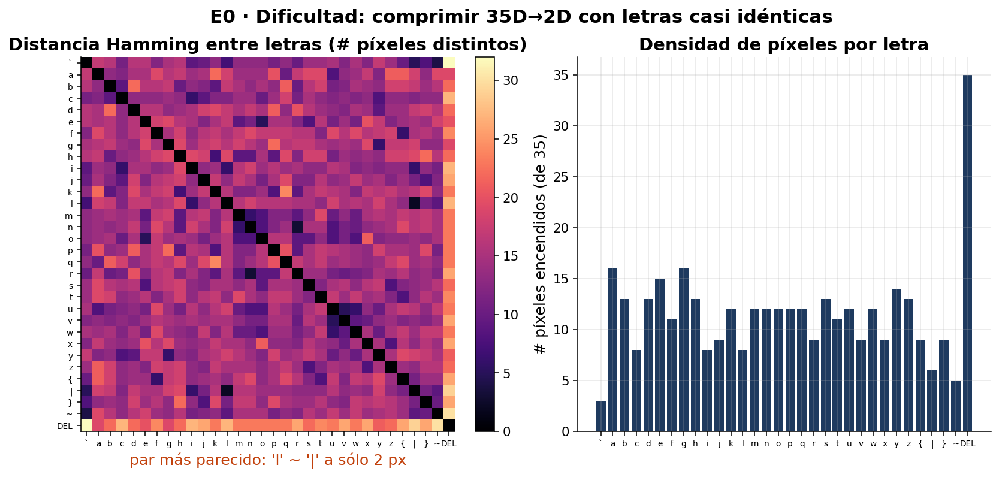
Izq: matriz de distancias entre letras. Der: cuántos píxeles encendidos tiene cada una.
2 px
el par más parecido: l y |
3 → 35
píxeles encendidos: de ` a DEL
💡 Qué enseña
Hay letras casi idénticas (l y | a
solo 2 píxeles) que el cuello de 2D va a tener que separar igual, y un outlier rarísimo (DEL,
con todos los píxeles encendidos). Comprimir 35 dimensiones a 2 sin perder estas diferencias finas es
genuinamente difícil — por eso hace falta una red con curvas (no-lineal).
Parte 1a · Experimento E1
¿Hacen falta las "curvas" (la no-linealidad)?
La pregunta. ¿Alcanza con un método lineal clásico —que es
justo el PCA del TP4— o hace falta una red no-lineal?
Qué probamos. Tres modelos comprimiendo a 2D: un autoencoder
no-lineal, un autoencoder lineal, y PCA de 2 componentes.
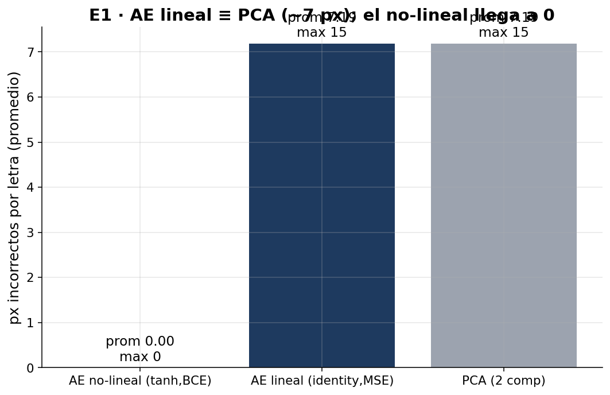
Error de reconstrucción (en píxeles) de cada modelo. Menos es mejor.
modelo
px máximo
px promedio
letras perfectas
AE no-lineal
0
0.000
32 / 32 ✓
AE lineal
15
7.188
0 / 32
PCA (2 comp.)
15
7.188
0 / 32
⚠️ Lo que NO funcionó
El AE lineal y el PCA fracasan idénticamente:
7.188 px de error promedio, cero letras perfectas. Que den exactamente el mismo número no
es casualidad: un autoencoder lineal es PCA.
💡 Qué enseña
La no-linealidad es lo que rompe la barrera. Solo el modelo con
"curvas" baja a 0 px. Esta es la conexión directa con PCA del TP4: el lineal no
alcanza para el objetivo de ≤1px.
🔬 En detalle (técnico)
El AE no-lineal es la receta ganadora: 35-20-2-20-35, activaciones tanh / identity /
sigmoid, loss BCE, optimizador Adam(0.01), 6000 épocas. El AE lineal usa
hidden=(), todo identity y loss MSE. El PCA(2) se calcula
analíticamente por SVD: Xc = X − mean(X), se proyecta sobre los 2 primeros vectores singulares.
Que el AE lineal+MSE converja exactamente al 7.188 px del SVD analítico demuestra empíricamente
el teorema de que un autoencoder lineal recupera el subespacio de PCA.
Parte 1a · Experimento E2
¿Cuántos números por letra hacen falta?
La pregunta. ¿2 dimensiones de cuello alcanzan, o necesitamos más?
Qué probamos. El mismo modelo no-lineal, variando el ancho del cuello:
1, 2, 3, 5 y 8 dimensiones.
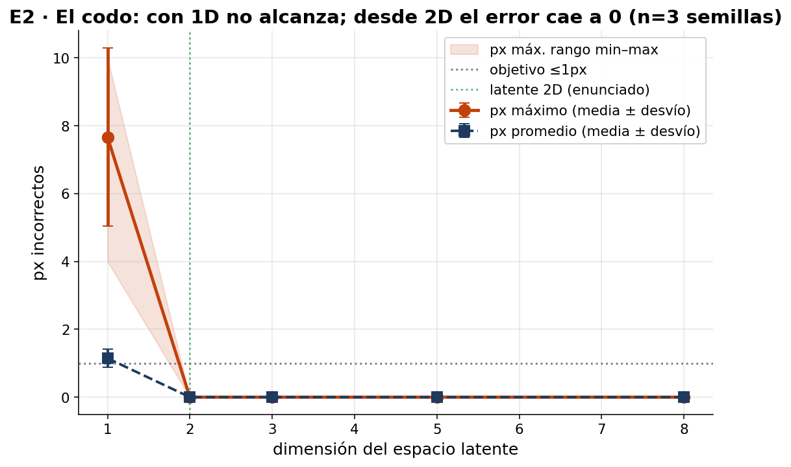
El "codo": el error se desploma al pasar de 1 a 2 dimensiones, y después ya está perfecto.
cuello
px máximo
px promedio
letras perfectas
1 dimensión
5
1.281
18 / 32
2 dimensiones
0
0.000
32 / 32 ✓
3 / 5 / 8
0
0.000
32 / 32
⚠️ Lo que NO funcionó
Con 1 sola dimensión solo salen 18/32
letras perfectas: la red tiene que ordenar las 32 letras sobre una recta, y letras distintas
terminan amontonadas en valores parecidos que el decoder ya no puede separar.
💡 Qué enseña
2D es el mínimo justo (el "codo"): es exactamente
lo que pide el enunciado y ya alcanza para 0 px. Agregar más dimensiones no mejora nada porque ya es perfecto.
Parte 1a · Experimento E3
¿Qué tan grande tiene que ser la red?
La pregunta. ¿Hace falta la capa oculta? ¿Cuántas neuronas?
Qué probamos. Distintos tamaños de capa oculta: ninguna, 10, 20, 30,
y dos capas de 20.
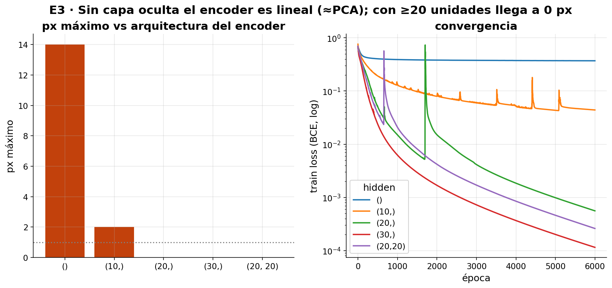
Izq: error según el tamaño de la red. Der: qué tan rápido y bajo converge cada una.
capa oculta
px máximo
letras perfectas
ninguna ()
14
1 / 32
10 neuronas
2
19 / 32
20 neuronas
0
32 / 32 ✓
30 neuronas
0
32 / 32
20 + 20
0
32 / 32
⚠️ Lo que NO funcionó
Sin capa oculta el encoder vuelve a ser
lineal y choca con la misma barrera de PCA (14 px máximo, 1 sola letra perfecta). Con 10 neuronas mejora pero
todavía no llega (2 px, 19/32).
💡 Qué enseña
Hace falta la capa oculta no-lineal, y 20 neuronas es la
capacidad mínima para 0 px. De acá sale el "20" de la receta ganadora.
🔬 En detalle (técnico)
Tanto el AE lineal (E1) como esta red sin capa oculta tienen encoder lineal, así que su
capacidad de comprimir a 2D es la de PCA. No dan números idénticos porque usan
distinta capa de salida y loss (E1: identity + MSE → promedio 7.19 / máx 15; sin-capa:
sigmoid + BCE → promedio 6.84 / máx 14), pero esa diferencia viene de la salida: la
sigmoid no le agrega capacidad al encoder. Con la misma métrica son equivalentes. Un
diagnostics.py con 3 semillas (px máx = [14, 15, 16]) confirma que la barrera es
estructural, no un mínimo local donde quedó atascado el entrenamiento. Lo que la rompe es
la capa oculta no-lineal: con (20,) → 0 px (la de 30 converge un toque más rápido, pero 20 ya
alcanza).
Parte 1a · Experimento E4
¿Con qué optimizador entrenar?
La pregunta. ¿Qué algoritmo de entrenamiento llega adonde los
otros se estancan?
Qué probamos.SGD, Momentum y Adam (cada uno con su mejor
paso de aprendizaje).
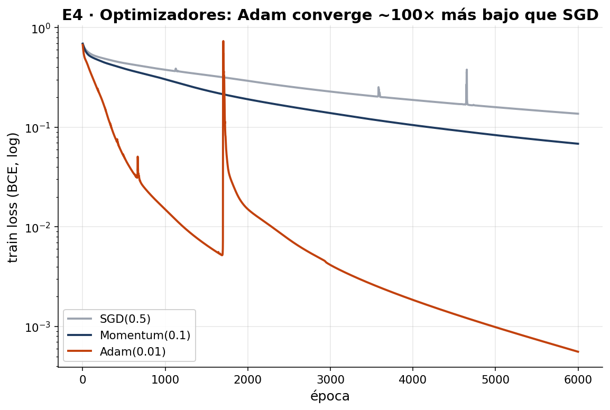
Curva de error durante el entrenamiento (escala logarítmica). Más abajo = mejor.
optimizador
px máximo
letras perfectas
SGD
5
10 / 32
Momentum
1
30 / 32
Adam
0
32 / 32 ✓
⚠️ Lo que NO funcionó
SGD se queda clavado en 5 px (solo 10
letras perfectas): cae en una meseta y no baja más. Momentum mejora bastante (1 px) pero todavía deja 2
letras imperfectas.
💡 Qué enseña
Adam gana: llega a 0 px con un error ~100 veces
más bajo que SGD. Adapta el paso para cada parámetro y escapa de la meseta donde los otros se atascan.
Parte 1a · Experimento E5
¿Qué tan grande tiene que ser el paso (learning rate)?
La pregunta. ¿Cuán sensible es al tamaño del paso? (y mostrar a
propósito un caso que NO funciona)
Qué probamos. Con Adam, tres pasos: 0.0003 (chico), 0.01 (justo) y
0.3 (grande).
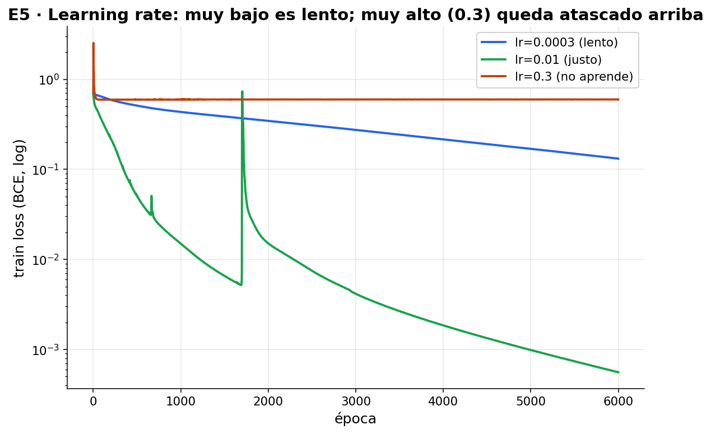
El paso chico baja lento; el justo llega abajo; el grande queda atascado arriba.
paso
px máximo
letras perfectas
0.0003 (chico)
5
10 / 32
0.01 (justo)
0
32 / 32 ✓
0.3 (grande)
28
0 / 32
⚠️ Lo que NO funcionó
El paso 0.3 directamente no aprende: 28
píxeles de error máximo, cero letras perfectas, el error queda atascado casi donde empezó. El paso es tan
grande que la red salta de un lado a otro sin poder bajar. El paso chico (0.0003) sí aprende pero es
demasiado lento para 6000 épocas.
💡 Qué enseña
El learning rate tiene un punto justo: muy chico = lento, muy
grande = no converge. 0.01 es el equilibrio.
Parte 1a · Experimento E6
¿Qué tipo de neurona (activación)?
La pregunta. ¿Cambia el resultado según la no-linealidad concreta?
Qué probamos. Tres activaciones en la capa oculta: tanh, relu y
sigmoid.
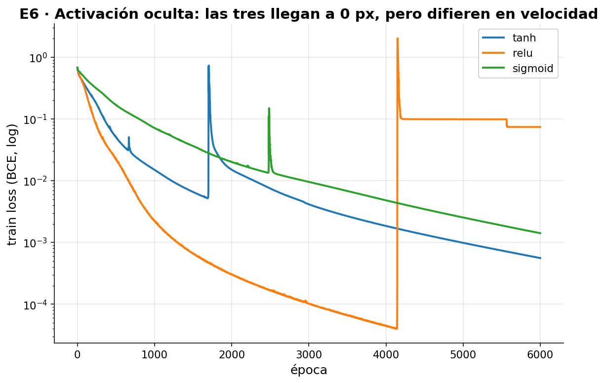
Las tres llegan a 0 px; lo único que cambia es la velocidad de convergencia.
💡 Qué enseña
Las tres llegan a 0 px — cualquier no-linealidad
razonable sirve. La diferencia es solo la velocidad: relu es la más rápida, sigmoid
la más lenta (se le saturan los gradientes), tanh queda en el medio. Por eso esta figura es de
curvas y no de barras: el resultado final en píxeles es idéntico. Para la receta elegimos tanh.
🔬 En detalle (técnico)
Velocidad medida como la época en que la loss baja de 1e-2: relu en la época 609 (y la
loss final más baja, 2.5e-5), tanh en 1485, sigmoid en 3593. Este test usa
Adam con eps=1e-4 (en vez del default 1e-8) para estabilizar la comparación y evitar el
"dying relu", así las tres curvas se ven limpias.
Parte 1a · Experimento E7
¿Cómo medir el error (la loss)?
La pregunta. Para imágenes en blanco y negro, ¿qué función de
pérdida conviene?
Qué probamos.BCE (entropía cruzada binaria) vs
MSE (error cuadrático).
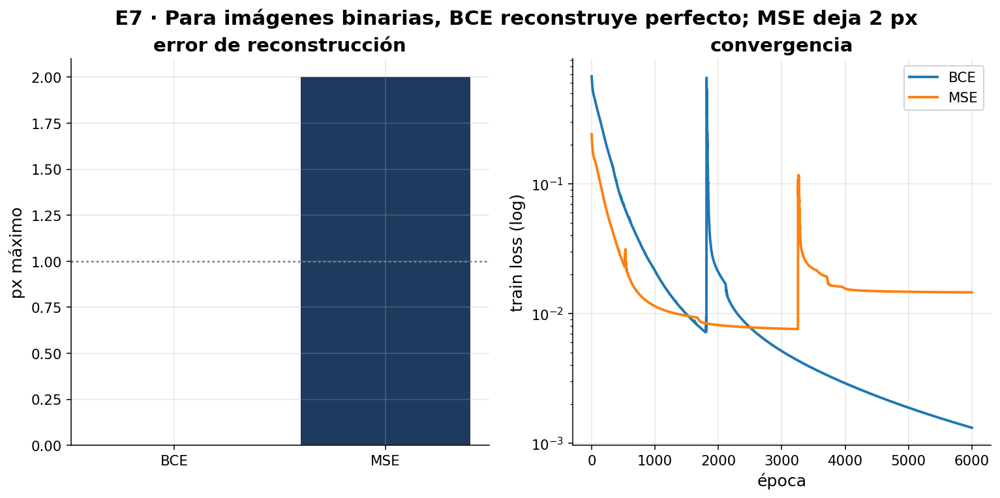
Izq: error final de cada loss. Der: cómo converge cada una.
loss
px máximo
letras perfectas
BCE
0
32 / 32 ✓
MSE
2
26 / 32
⚠️ Lo que NO funcionó
El MSE deja 2 px de error (solo 26/32
perfectas): trata los píxeles como números continuos y su gradiente se "apaga" cerca de 0 y 1, dejando
píxeles ambiguos sin decidir.
💡 Qué enseña
Para imágenes binarias, BCE. Los píxeles son
0 o 1 (Bernoulli) y BCE es su medida natural: castiga fuerte el error confiado (decir 0.99 cuando era 0).
De acá sale "BCE" en la receta.
Parte 1a · Experimento E8 · EL GANADOR
El modelo ganador en acción
La receta. Juntando lo mejor de cada experimento:
no-lineal (E1) + cuello 2D (E2) + 20 neuronas (E3) +
Adam 0.01 (E4, E5) + tanh (E6) + BCE (E7)
→ 35-20-2-20-35 → 0 px en las 32 letras.
Con el ganador entrenado, mostramos las cuatro cosas que pedía el enunciado:
1) Reconstrucción perfecta — la red devuelve las 32
letras idénticas a las originales.
Arriba cada letra original, abajo la reconstrucción de la red. Iguales: 0 píxeles de error.
2) El mapa de 2 números — dónde ubica cada letra en el espacio latente 2D.
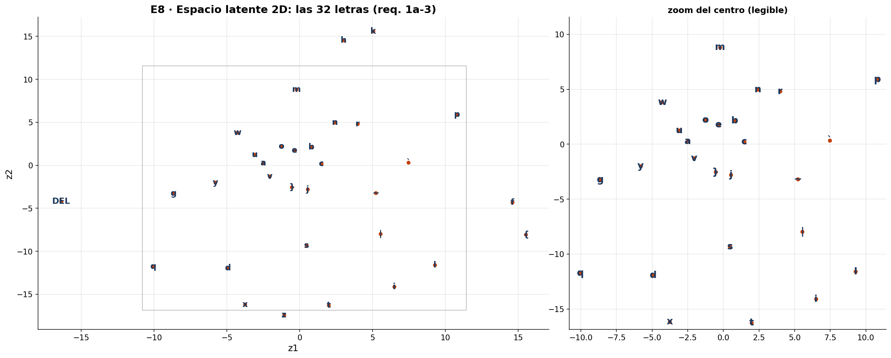
Las 32 letras en el mapa de 2 dimensiones; el recuadro de la derecha es un zoom del centro.
2b) ¿El mapa preservó el parecido entre letras? — comparamos la distancia
entre cada par de letras en píxeles (Hamming) vs en el mapa latente.
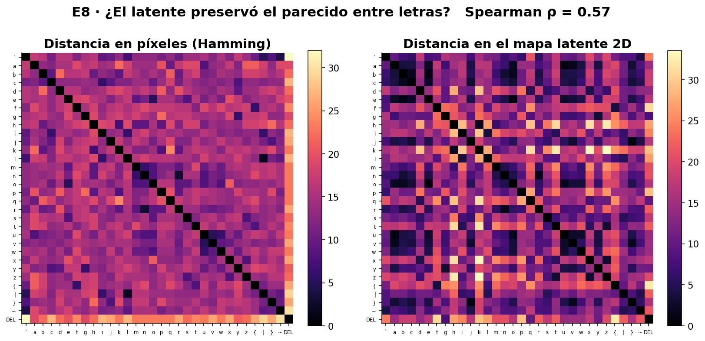
Distancia en píxeles (izq.) vs en el mapa 2D (der.), mismas letras y orden. Spearman ρ = 0.57.
💡 El contraste (un insight fino)
El AE preserva la distinguibilidad
por completo — tiene que, porque reconstruye las 32 letras a 0 px, así que ninguna se pisa con otra.
Pero el parecido lo conserva solo a medias (ρ = 0.57): las parecidas tienden a quedar
cerca, pero los pares casi idénticos los separa a propósito. Ejemplo verificado: l
y | son el par #1 más parecido en píxeles (2 px), pero en el mapa quedan más
separados que ~6% de los pares — el AE los empuja aparte justamente para poder reconstruir ambos sin error.
En una frase: optimiza reconstrucción, no la métrica de distancias.
3) Inventar letras nuevas — recorriendo el mapa aparecen formas que no estaban
en el dataset.
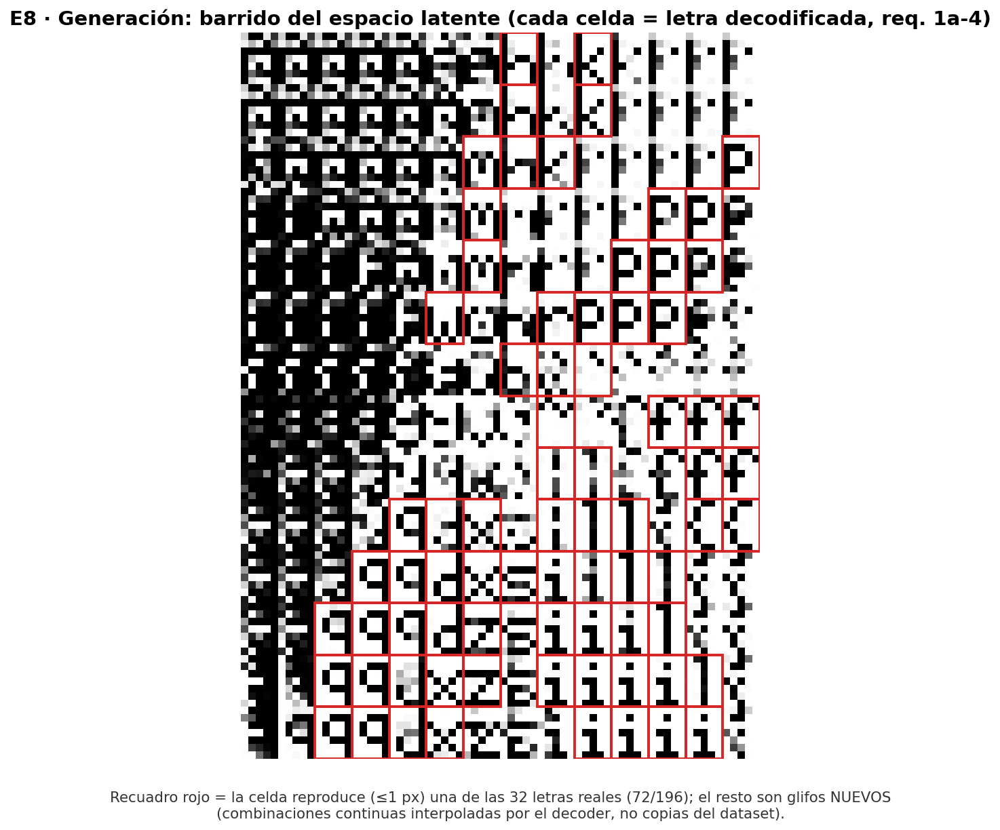
Cada celda es un punto del mapa decodificado. En las zonas pobladas salen letras nuevas.
4) De la a a la o — caminar en línea recta entre dos
letras genera mezclas continuas.
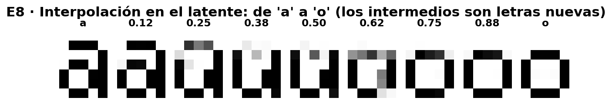
9 pasos del mapa, de la a a la o: los del medio son glifos intermedios nuevos.
💡 Qué enseña
El ganador cumple las cuatro consignas. Pero ojo:
el mapa tiene huecos y una escala arbitraria (va de −16 a +16). Un punto al azar puede caer en una "zona
muerta" y salir basura. Esa limitación —el AE no sabe dónde están los puntos válidos— es justo lo
que va a resolver el VAE en la Parte 2.
🔬 En detalle (técnico)
La loss BCE final del ganador es ≈ 5.6e-4. El latente va de z1∈[−15.6, +15.7] y z2∈[−16.2, +13.9]:
DEL queda como outlier a la izquierda, las letras "casi idénticas" del E0 (como l y
|) quedan bien separadas. La generación (punto 3) es una grilla 14×14 decodificada; la
interpolación (punto 4) son 9 pasos (1−t)·z_a + t·z_o. Nada de esto reentrena: carga el modelo
guardado. Detalle conceptual: acá el "overfitting" (memorizar las 32 letras) es el objetivo,
no un problema — son el universo completo, no una muestra a generalizar.
Parte 1b
Denoising: enseñarle a limpiar manchas
Misma idea de antes, pero con un giro clave: ahora le damos a la red la imagen
sucia (con ruido) y le pedimos que devuelva la limpia.
La red ya no aprende "copiá la entrada" sino "sacale las manchas".
La diferencia con el autoencoder normal
Es un cambio chiquito en el código pero enorme en concepto:
AE normal (1a): entrada limpia → target la misma entrada limpia. Aprende
"x → x". Sirve para comprimir.
Denoising AE (1b): entrada con ruido → target el patrón limpio. Aprende
"sucio → limpio". Sirve para limpiar.
El ruido es bit-flip: cada píxel se da vuelta (0↔1) con cierta probabilidad p,
y es fresco en cada época (la red nunca ve dos veces la misma mancha). Usamos las mismas 32
letras, pero con una arquitectura un poco distinta: 35-25-{cuello}-25-35.
Parte 1b · Experimento E9
¿Por qué un cuello más ancho que en 1a?
La pregunta. ¿El cuello de 2 que usamos en 1a sirve para limpiar,
o limpiar necesita más capacidad?
Qué probamos. Anchos de cuello 2, 5, 10 y 20 (entrenando todos
con 15% de ruido).
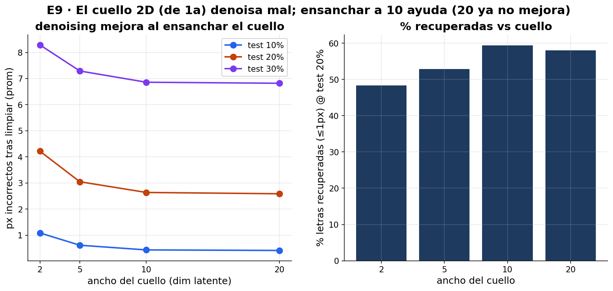
Izq: error según el ancho del cuello. Der: % de letras bien recuperadas a 20% de ruido.
cuello
error px (a 20% ruido)
% letras recuperadas (≤1px)
2 (el de 1a)
4.22
48.4%
5
3.05
52.9%
10
2.64
59.4% ✓
20
2.59
58.0%
⚠️ Lo que NO funcionó
El cuello 2 de 1a limpia mal: a 20% de
ruido solo recupera el 48% de las letras. Ese cuello estaba optimizado para comprimir patrones
limpios, no para limpiar.
💡 Qué enseña
Limpiar ruido necesita más capacidad latente que
comprimir. Ensanchar a 10 sube la recuperación a 59%. Pasar de 10 a 20 ya casi no
mejora (satura), así que el ganador usa 10 — sin neuronas de más.
Parte 1b · Experimento E10
¿Cuánto ruido conviene poner al entrenar?
La pregunta. ¿Hay un nivel de ruido de entrenamiento "óptimo", o
es un compromiso?
Qué probamos. Tres denoisers entrenados con 5%, 15% y 30% de
ruido, cada uno probado contra todos los niveles de ruido.
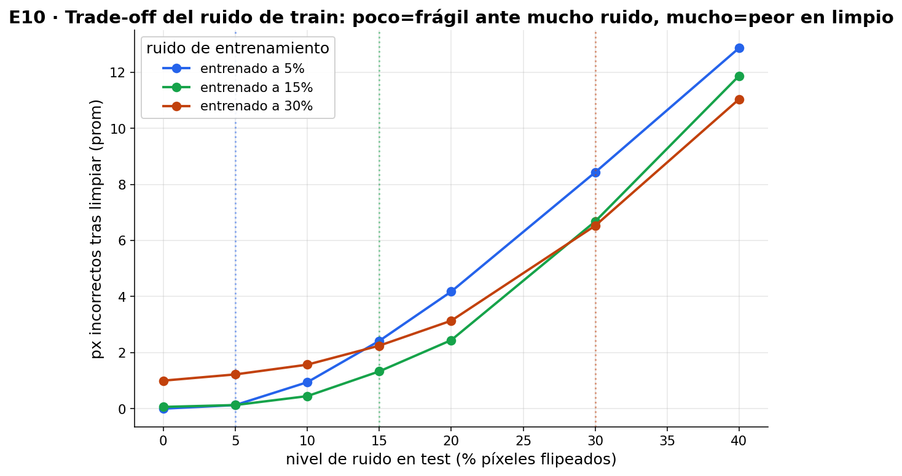
Cada curva es un denoiser. Lo importante: las curvas se cruzan.
⚠️ El trade-off (no hay un único "mejor")
Entrenar con poco ruido (5%) → lo mejor en imágenes limpias o poco sucias, pero
se rompe ante mucho ruido (8.4 px de error a 30%).
Entrenar con mucho ruido (30%) → robusto ante mucha mancha, pero
empeora en limpio: deja 1 px de error ¡incluso con la imagen sin ruido! (le "inventa"
manchas donde no hay).
Las curvas se cruzan: cada nivel es el mejor en su propio rango.
💡 Qué enseña
El ruido de entrenamiento es un hiperparámetro con
compromiso, no algo para maximizar. 15% es el punto de equilibrio:
gana en la franja media sin pagar el costo del 30% en limpio. Por eso es el del ganador.
🔬 En detalle (técnico) — la tabla completa
Error en píxeles según ruido de test (filas) × ruido de entrenamiento (columnas). En negrita
el mejor de cada fila:
ruido test
train 5%
train 15%
train 30%
0% (limpio)
0.00
0.06
1.00
10%
0.94
0.45
1.57
15%
2.42
1.33
2.25
20%
4.18
2.45
3.14
30%
8.43
6.68
6.53
Se ve el cruce: train 5% gana arriba (poco ruido), train 30% gana abajo (mucho
ruido), train 15% domina la franja media.
Parte 1b · Experimento E11
Ver el denoiser en acción
La pregunta. ¿Realmente reconstruye el patrón limpio desde la
versión sucia? (evidencia visual)
Qué mostramos. Para 5 letras (a e g r s) y tres niveles de ruido:
la letra limpia, la sucia, y la que recupera la red.
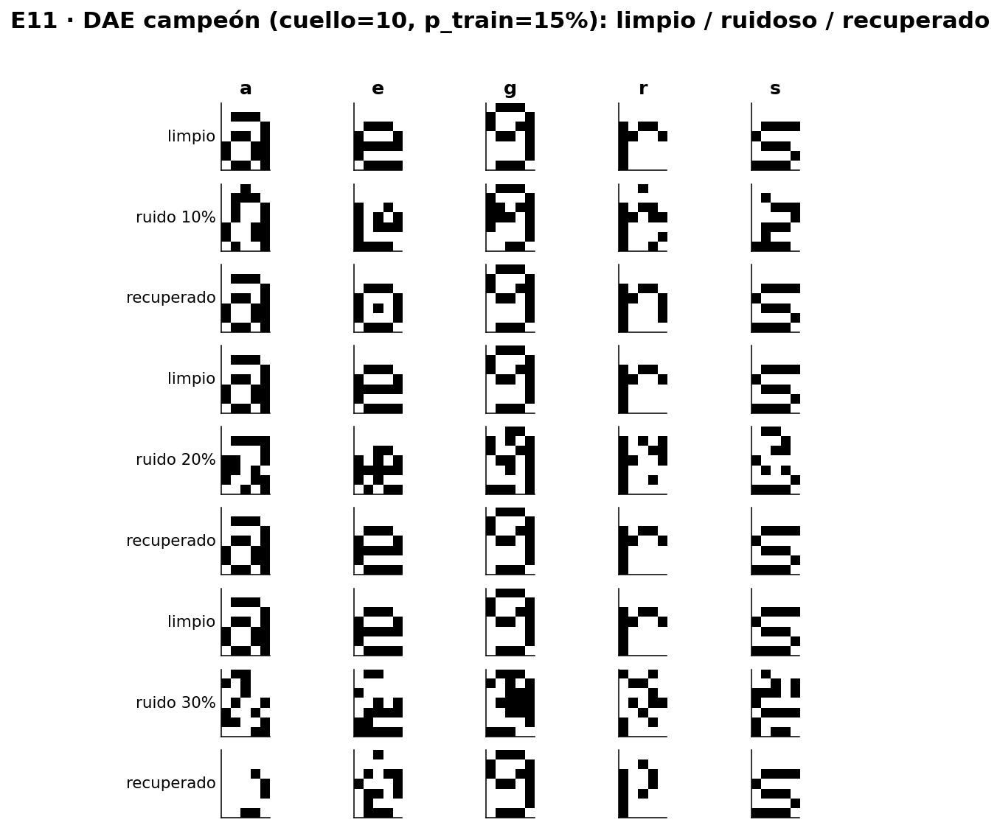
Para cada nivel de ruido: fila limpia, fila con ruido, fila recuperada por el denoiser.
💡 Qué enseña
Se ve directo el "sucio → limpio": a 10% y 20% recupera muy bien;
a 30% empieza a costarle (consistente con los números). Es la prueba visual de que la red aprendió a reparar,
no a copiar.
Parte 1b · EL GANADOR REFORZADO
El número final del denoiser
La receta. Cuello 10 (de E9) + ruido de
entrenamiento 15% (de E10), reentrenado a fondo (15000 épocas) para dar un
número contundente.
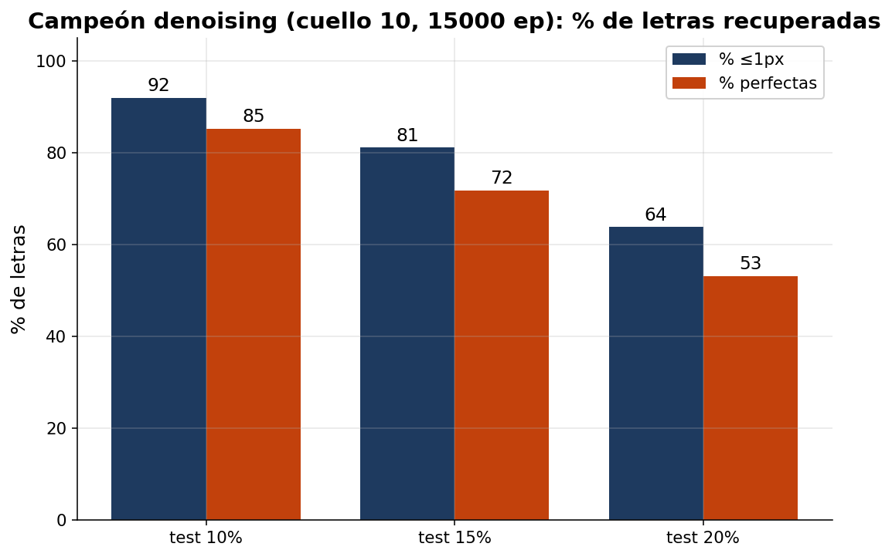
% de letras recuperadas por el denoiser ganador, según el nivel de ruido.
92%
letras recuperadas a 10% de ruido
81%
a 15% (su nivel de entrenamiento)
64%
a 20% de ruido
💡 Qué enseña
Con la arquitectura justa y el ruido balanceado, el denoiser
limpia muy bien: ~81% de las letras casi perfectas a su nivel de ruido, degradándose suave
al subir el ruido. Es el resumen de toda la Parte 1b en un número.
🔬 En detalle (técnico)
Evaluación robusta: 50 realizaciones de ruido × 32 letras por nivel. Números exactos — a 10%: 0.42 px
promedio, 91.9% ≤1px, 85.2% perfectas; a 15%: 1.08 px, 81.1% ≤1px, 71.8% perfectas; a 20%: 2.44 px, 63.8%
≤1px, 53.2% perfectas. El reentrenamiento a 15000 épocas (vs 6000 de los barridos) mejora todos los niveles.
Técnica clave del denoising: no usa el fit() estándar porque necesita ruido nuevo cada época y
un target distinto de la entrada; se orquesta forward/backward a mano pasando la
entrada sucia pero el target limpio.
Parte 2 · VAE
Generar imágenes nuevas de verdad
El autoencoder variacional (VAE) cambia una cosa fundamental: el cuello ya no guarda
un punto por imagen, sino una zona (una distribución). Eso, más un ingrediente
nuevo en la pérdida, es lo que le permite inventar imágenes desde cero.
La diferencia con el autoencoder de 1a
En 1a vimos que el AE puede generar interpolando entre letras conocidas. Pero tiene un problema:
su mapa tiene huecos y escala arbitraria, así que si elegís un punto al azar podés caer en zona muerta y sale
basura. El AE no te dice dónde están los puntos válidos.
El VAE resuelve eso con dos cambios:
El encoder da una distribución (una media μ y una dispersión σ) en vez de un punto.
Cada imagen es una "nubecita" en el mapa.
Un término nuevo en la loss (el "KL") que empuja todo el mapa a tener forma de
campana de Gauss estándar centrada en 0. Así sabemos exactamente de dónde samplear.
AE = navegar a mano entre puntos conocidos · VAE = samplear al azar de un prior conocido
El peso de ese término KL se llama β (beta), y es lo único que barrimos en toda la Parte 2.
🔬 El detalle más riguroso del TP
Todo el VAE está programado en numpy
desde cero —incluido el backprop del término KL y del reparametrization trick, derivados
a mano— y verificado con un gradient check numérico (error 5e-08). Es decir:
comprobamos contra diferencias finitas que cada derivada está bien calculada; no confiamos en el autograd de
ninguna librería.
🔬 En detalle (técnico) — arquitectura y loss
Arquitectura: 400 → 128 → (μ, logσ²) en Z=2 → 128 → 400, con sigmoid en la salida. El
reparametrization trick escribe z = μ + σ·ε con ε~N(0,I): deja el
azar fuera del grafo para poder backpropagar a través del muestreo. La loss es
reconstrucción(BCE) + β·KL, donde el KL =
−0.5·Σ(1 + logσ² − μ² − σ²) mide cuánto se aleja cada nube de la campana estándar N(0,I). Todo
el backprop (incluido el KL) está derivado a mano en numpy y verificado con un gradient check numérico de
error 5e-08. Entrenamiento: Adam lr=1e-3, 3500 épocas, batch 128.
Parte 2 · El dataset
Datos nuevos: 5 emojis
Por qué. El enunciado pide un dataset nuevo. Elegimos
5 emojis con siluetas bien distintas: corazón, estrella, gota, luna y rayo.
Cómo. Imágenes de 20×20 píxeles, sacando la silueta de cada
emoji (el canal de transparencia). Generamos 140 variantes por clase (= 700 imágenes) con rotaciones y
corrimientos chiquitos, para que la red vea variedad continua.
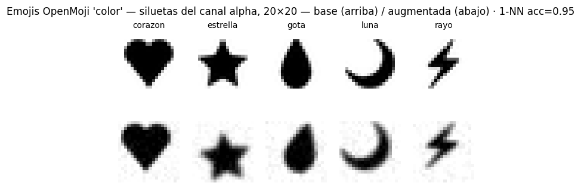
Arriba la silueta base de cada clase; abajo una variante aumentada.
⚠️ La primera versión NO funcionó
Probamos primero los emojis de contorno
(line-art): a 20×20 los contornos se confunden y las clases no se distinguen (una métrica de "¿se reconoce la
clase?" daba apenas ~0.5). Cambiamos a la silueta rellena (canal alpha) y saltó a
0.95: ahí sí las 5 clases son claramente distinguibles. También descartamos formas
geométricas (triángulo, círculo…) por confundibles y "poco emoji".
💡 Qué enseña
La calidad del dataset importa tanto como el modelo: siluetas
limpias y bien separadas hacen que el VAE pueda aprender un mapa ordenado. El dataset queda guardado en el
repo, así que es reproducible sin internet.
Parte 2 · Experimento E12 · el central
¿Qué pasa al samplear según β?
La pregunta. Si elijo un punto al azar de la campana N(0,I) y lo
decodifico, ¿sale un emoji válido o basura? ¿Y cómo depende eso de β (cuánto ordenamos el mapa)?
Qué probamos. Cuatro VAEs con β = 0, 0.5, 1 y 4, decodificando
las mismas 10 muestras al azar con cada uno.
Cada fila es un β. Arriba (β=0, sin el ingrediente KL) sale ruido; con KL salen emojis.
⚠️ Lo que NO funcionó
Con β=0 (sin el término KL) salen manchas de
ruido. Sin ese ingrediente, el mapa se desparrama (escala enorme, hasta ±49) y un punto de la
campana N(0,I) cae en una zona que la red nunca entrenó.
💡 Qué enseña
El término KL es lo que hace generable el mapa.
Desde β=0.5 en adelante, samplear al azar produce emojis válidos y reconocibles. Es el experimento que
justifica todo el VAE.
Parte 2 · Experimento E16
¿Por qué uno genera y el otro no? (AE vs VAE)
La pregunta. Ver lado a lado el mapa del AE (β=0) y el del VAE
(β=1) para entender visualmente la diferencia.
Izq: el mapa del AE, desparramado. Der: el mapa del VAE, compacto y centrado en 0.
AE (β=0)
VAE (β=1)
dispersión del mapa
enorme (±49)
compacta (±3.3)
¿parece campana N(0,I)?
no
sí (std 1.17)
¿se puede samplear al azar?
no → ruido
sí → emojis ✓
💡 Qué enseña
Samplear N(0,I) solo funciona si el mapa cae dentro de la
zona N(0,I). En el AE los puntos quedan a escala ±49 (la campana es un puntito en el medio, todo lo demás cae
afuera); el KL del VAE empuja cada nube q(z|x) hacia N(0,I) y las junta en torno al 0. Ojo: el mapa entero no
es exactamente N(0,I) (conserva 5 cúmulos de clase), pero queda lo bastante compacto y cubierto para
que un punto al azar caiga en zona válida. Esa es la razón de ser del VAE.
Parte 2 · Experimento E13
¿Cómo quedó el mapa del VAE por clase?
La pregunta. ¿El mapa del VAE (β=1) realmente ordenó las clases y
quedó con forma de campana?
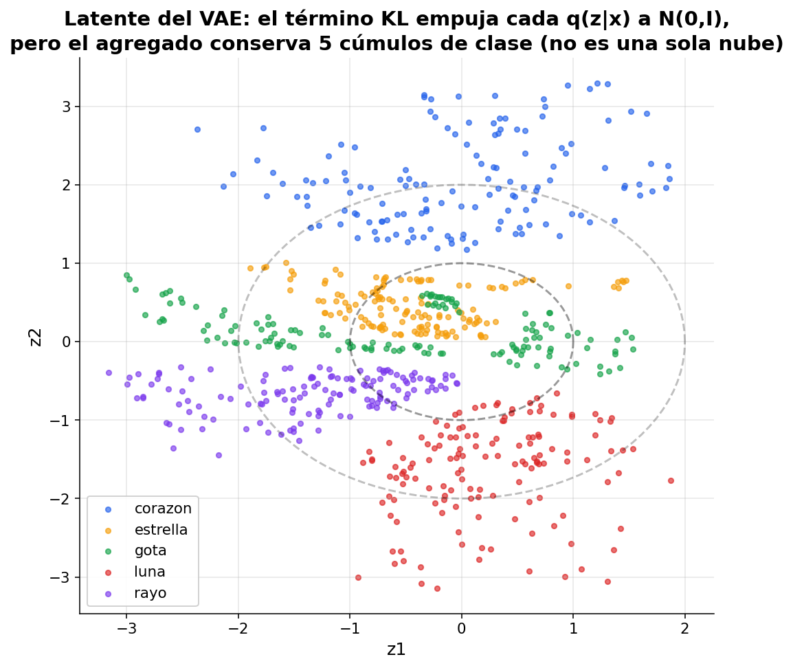
Cada emoji codificado, coloreado por clase. Los círculos marcan la campana N(0,I) (radio 1 y 2).
💡 Qué enseña
El KL empuja cada nube q(z|x) hacia N(0,I), pero el agregado
conserva 5 cúmulos de clase (no es una sola nube): cada tipo en su zona, todos dentro de la
campana. Es la combinación: un mapa a la vez ordenado por significado y con la forma conocida que
permite generar. Detalle honesto: las clases no ocupan áreas iguales, así que al samplear N(0,I) algunas salen
más seguido — medido sobre 200 semillas (E18), una tirada cubre en promedio el 85 % de las clases (4.3/5),
con reparto desigual (estrella ≈33 %, luna ≈23 %, gota ≈19 %, rayo ≈14 %, corazón ≈12 %).
Parte 2 · Experimento E14 · el entregable generativo
Reconstruir y generar muestras nuevas
La prueba final. Que el VAE (a) reconstruye fiel, y (b) genera
muestras nuevas —no copias— desde la campana al azar: variaciones continuas de los 5 prototipos.
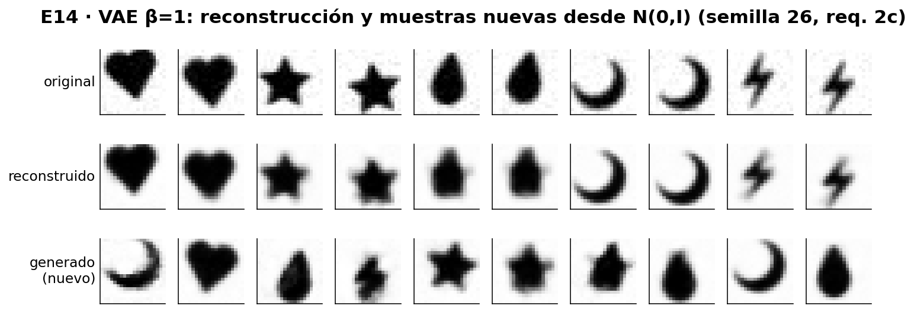
Fila 1: emojis reales. Fila 2: sus reconstrucciones. Fila 3: muestras nuevas (no copias) generadas desde N(0,I).
💡 Qué enseña
La reconstrucción es casi idéntica al original, y la última fila
son muestras nuevas (no copias) y reconocibles que no estaban en el dataset: variaciones
continuas de los 5 prototipos (corazón, luna, gota, estrella, rayo), no una sexta clase inventada. Es la
evidencia central de que el VAE genera. Honesto: una tirada al azar no siempre saca las 5
clases (≈85 % en promedio, ver E18); para esta figura se eligió una semilla que muestra las cinco.
Parte 2 · Experimento E17
El mapa completo, decodificado
La pregunta. ¿El mapa del VAE es continuo (sin huecos) o tiene
zonas muertas como el AE?
Qué hicimos. Barrimos el mapa en una grilla y decodificamos cada punto, armando
un "atlas".
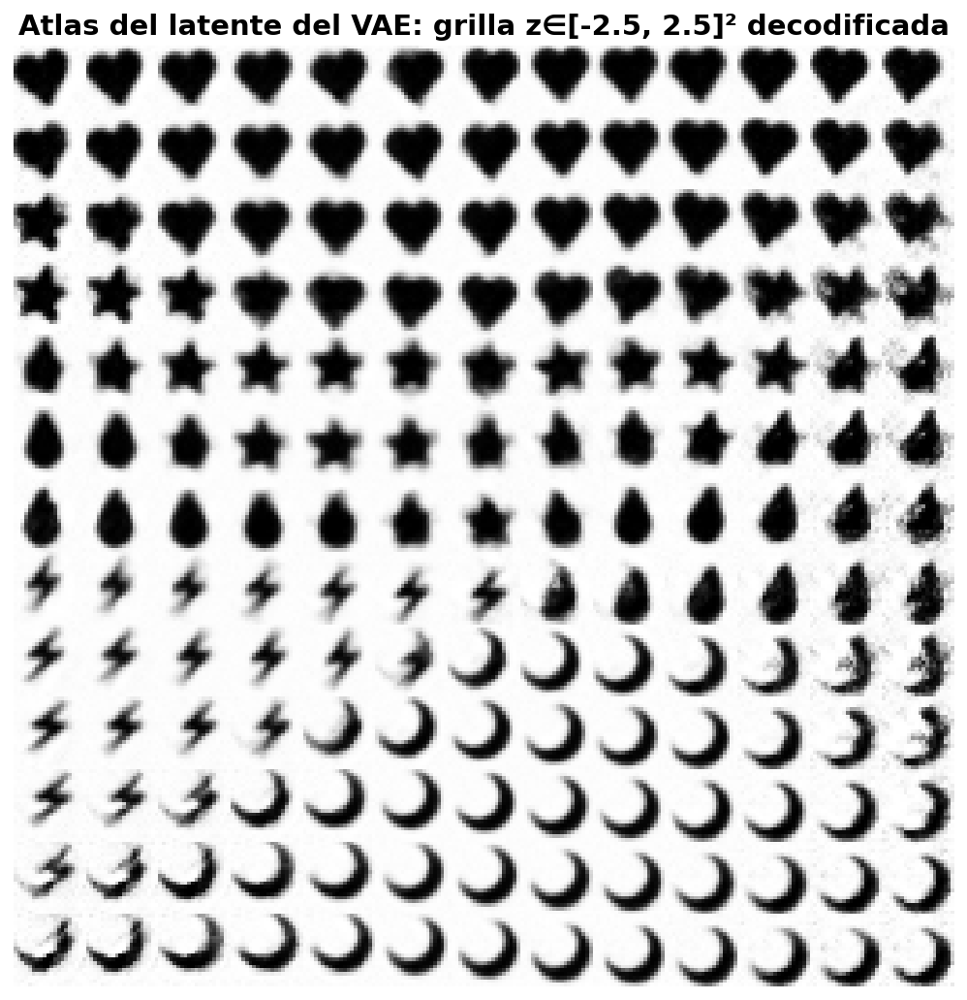
Grilla del mapa decodificada: los emojis se transforman de a poco uno en otro.
💡 Qué enseña
El mapa es un continuo navegable: los emojis se
transforman suavemente entre sí, con mezclas en las fronteras (no copias de los 5 originales). Confirma que lo
que genera son imágenes nuevas legítimas, no memorización. Es el "espejo" de la grilla de letras del AE
(E8), pero acá sin zonas muertas.
Parte 2 · Experimento E15
El equilibrio: reconstrucción vs orden (las dos partes de la loss)
La pregunta. ¿Cómo se pelean los dos términos de la pérdida
(reconstruir bien vs ordenar el mapa) según β?
Izq: error de reconstrucción. Der: el término KL (qué tan ordenado está el mapa) en el tiempo.
β
reconstrucción (% px mal)
orden del mapa (KL)
0 (sin KL)
2.6% (la mejor)
se dispara (283) ✗
1 (equilibrio)
3.2%
6.1 (ordenado) ✓
4 (mucho orden)
3.7% (la peor)
4.1 (el más ordenado)
💡 Qué enseña
β es una perilla con compromiso: más β = mapa
más ordenado (mejor para generar) pero reconstrucción un poco peor. Con β=0 el orden del mapa se descontrola
por completo (el KL se dispara a 283: el mapa "se escapa"). β=1 es el equilibrio
que elegimos: mapa bien ordenado con reconstrucción casi tan buena como sin KL.
Cierre
Las tres conclusiones
Parte 1a — con una red no-lineal y solo
2 números guardamos las 32 letras a la perfección (0 px). Un método clásico (PCA) no llega.
Cada decisión de la receta salió de aislar un experimento.
Parte 1b — el mismo tipo de red, entrenada con
"sucio → limpio", aprende a quitar ruido. Limpiar necesita un cuello más ancho que comprimir,
y el ruido de entrenamiento es un compromiso (ni mucho ni poco).
Parte 2 (VAE) — al hacer que el mapa tenga forma de
campana conocida (el término KL), el modelo pasa de resumir a
generar imágenes nuevas desde cero.
El hilo conductor de todo el TP: un autoencoder es un cuello
angosto que obliga a resumir. Según qué le pidas reconstruir (lo mismo, lo limpio, o una distribución
entera), obtenés compresión, limpieza o generación.